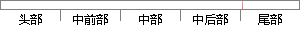

实际上，各种决策树都是根据某种规则对训练数据进行递归式的分类，并最终根据终止条件结束算法。
片段位置图

相似结果|
1
原句片段：实际上，各种决策树都是根据某种规则对训练数据进行递归式的分类，并最终根据终止条件结束算法。
相似片段 1：决策树的主函数:各种决策树的主函数大同小异,本质上是个递归函数,该函数主要功能是根据某种规则生长出决策树的各个分支节点,并根据终止条件结束算法。 输入需要分类...
相似片段 2：本质上决策树是通过一系列规则对数据进行分类的过程...并终止学习算法;否则 3 根据某种策略从训练样本属性...对每个子集递归调用CLS; 第6章 决策树决策树算法 ...
|
※ 片段修改建议 ※
近似词参考：- 各种：各类 种种
- 根据：按照 凭据 依据
- 规则：法则 划定规矩 规矩
- 训练：练习
- 进行：举行
- 最终：终究 终极
- 根据：按照 凭据 依据
- 终止：停止
- 条件：前提
- 结束：竣事 收场
系统自动生成语句：实际上，各类决策树都是按照某种法则对练习数据举行递归式的分类，并终究按照停止前提竣事算法。
注：本片段修改建议为系统自动生成，仅供参考。